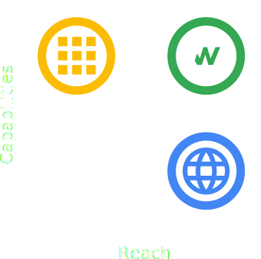

Capable, reliable and installable
Requirments, considerations and examples.
Name, icons, URL and other metadata.
Storing data locally on the client.
Short introduction using WorkBox in React to make a cached PWA.